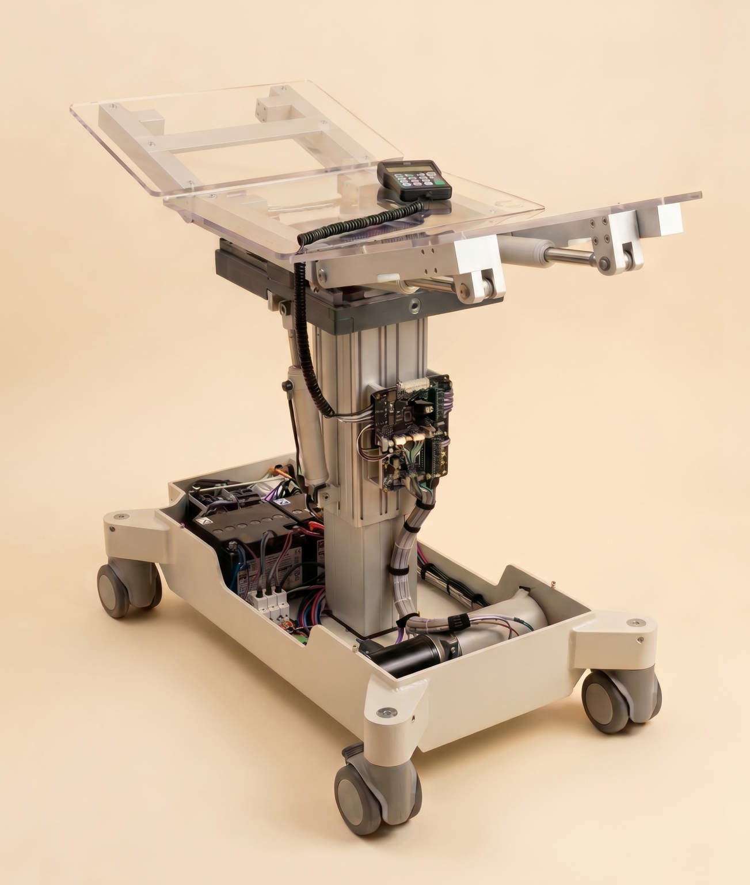

Schematic/PCB review, sensors, microcontrollers, motor drivers, BOM risk, component checks, and DFM/DFT handover.
SHEET01 / 09
PROJECTBERTRANDT — PARTNER PROFILE
REVA.1 · 2026-05-21
FIRMINTESPRING CONTROL SYSTEMS
// partner profile · bertrandt technology consulting gmbh
InteSpring
Control Systems
PCB electronics · embedded control · validation · documentation — assembled into one deployable engineering cell for complex DACH mechatronic products.
- CAPACITY100 h / week · combined
- MODERemote-first · hybrid Munich/Bavaria
- STARTFrom 2026-05-21
- LANGUAGEEnglish · German coordination
 FIG.01 — centaur exoskeleton, control system
FIG.01 — centaur exoskeleton, control system
SHEET02 / 09
SECTIONFIT FOR BERTRANDT
REVA.1
FIRMINTESPRING CONTROL SYSTEMS
// 02 — where we fit
One compact team for PCB, embedded control, validation, and documentation.
We strengthen projects where electronics, firmware, mechanics, test, technical documentation, and industrialization all need to become reliable in the same window.
Control logic, RTOS-aware interfaces, sensor fusion, actuation, integration planning, and robust subsystem behavior.
Test strategy, HIL/HILS, MATLAB/Simulink, digital twins, LabVIEW/NI, measurement planning, traceability, and reports.
Medical, robotics, industrial, wearable, RF/UAV, and defense-adjacent systems without locking to a narrow market label.
SHEET03 / 09
SECTIONCORE STACK
REVA.1
FIRMINTESPRING CONTROL SYSTEMS
// 03 — public credibility base
Sense. Control. Actuate.
Integrated motion-control systems for robotics, wearables, and high-reliability environments — modular, integration-ready subsystems.
01
SENSE
Sensor fusion · IMU arrays · real-time orientation · robust signal paths.
02
CONTROL
Motor control · supervisory logic · embedded interfaces · safety behavior.
03
ACTUATE
BLDC · solenoid · hydraulic-adjacent drivers for robust field applications.
SHEET04 / 09
SECTIONPROGRAMS & TOOLS
REVA.1
FIRMINTESPRING CONTROL SYSTEMS
// 04 — programs, tools, automation
Grouped by outcome, with tools only where they build trust.
A.1System design
Architecture, interfaces, control logic, simulation, RTOS-aware planning, digital-twin concepts, integration planning.
MATLAB · Simulink · Python · C/C++A.2Electronics
PCB design/review, BOM review, motor drivers, sensor interfaces, microcontrollers, DFM/DFT handover.
Altium Designer · KiCadA.3Validation
Test strategy, HIL/HILS, measurement plans, traceability, reports, hardware QA.
LabVIEW · NI · MATLAB · SimulinkA.4Automation layer
Engineer-supervised automation for documentation, PCB review, BOM/component risk, supplier evidence, design-history.
Internal toolchainA.5Prototype path
Prototype planning, build documentation, assembly notes, QA checklists, sourcing comparison, production handover.
EU-only or cost-flexibleA.6Special proof
RF/UAV, PX4/Pixhawk, wearable robotics, defense-adjacent — additional experience, not a market filter.
Domain-specificSHEET05 / 09
SECTIONDELIVERABLE PACKAGES
REVA.1
FIRMINTESPRING CONTROL SYSTEMS
// 05 — deliverable packages
From fast review to validated prototype.
SHEET06 / 09
SECTIONTEAM
REVA.1
FIRMINTESPRING CONTROL SYSTEMS
// 06 — team
Three complementary profiles, one delivery cell.
CTO / system architect — PCB electronics, embedded-control planning, human-interactive hardware, rapid prototyping, regulated documentation.

Electrical / RF / validation — PCB, embedded interfaces, RF testing, UAV proof points, LabVIEW/NI, MATLAB/Simulink, HIL/HILS.
Mechatronic R&D — medical OCT interface/control, exoskeletons, robotics, IoT hardware, hydraulics, prototype validation.
SHEET07 / 09
SECTIONPROOF POINTS
REVA.1
FIRMINTESPRING CONTROL SYSTEMS
// 07 — proof points
Selected references from PCB/control-heavy hardware.

FIG.02 — operating tableModular solenoid drivers, DC motor drivers, bus architecture, power supervisor, redundancy, EMC-aware development.
 FIG.03 — rescue stretcher driver
FIG.03 — rescue stretcher driverSensorless BLDC driver for safety-critical load cases and production-oriented volumes.
 FIG.04 — OCT scanner
FIG.04 — OCT scannerProof of principle for the critical signal and control chain in medical precision hardware.
 FIG.05 — cockpit chair
FIG.05 — cockpit chairActive spring balancing for lower-fatigue operator work, sight line, precision, comfort.
SHEET08 / 09
SECTIONCASE — CENTAUR
REVA.1
FIRMINTESPRING CONTROL SYSTEMS
FIG.06 — centaur exoskeleton control architecture
// 08 — wearable robotics / defense-adjacent
Centaur exoskeleton — low-power sensing, drivers, robust sensor fusion.
Human-powered hydraulic exoskeleton with a proprietary low-power control system, 5x miniaturized 9-axis IMU array, solenoid hydraulic drivers, gait recognition, and intent recognition.
SHEET09 / 09
SECTIONNEXT STEP
REVA.1
FIRMINTESPRING CONTROL SYSTEMS
// 09 — next step
Ready for short-notice project staffing through Bertrandt.
Deployable as a compact specialist team — remote first, hybrid in Munich/Bavaria as needed, with up to 100 h/week combined capacity plus practical validation, sourcing, and manufacturing pathways.
CAPACITYTrebsijg 40 h · Osama 40 h · Coen 20 h / week
LANGUAGEEnglish · German coordination & documents
STARTFrom 2026-05-21 — diagnostic, sprint, or scoped review
ONBOARDINGContracting & partner details via Bertrandt onboarding